TECH 01
轻量化板芯
进口复合白杨木芯
在板芯局部采用高强度、轻量化的木材组合，减轻整体重量，却不损失核心支撑力。Ollie 和转向更省力，全天滑行不累脚。
VM88 · 进阶全能单板 · ALL-MOUNTAIN
Nuage
把黄昏，踩在脚下
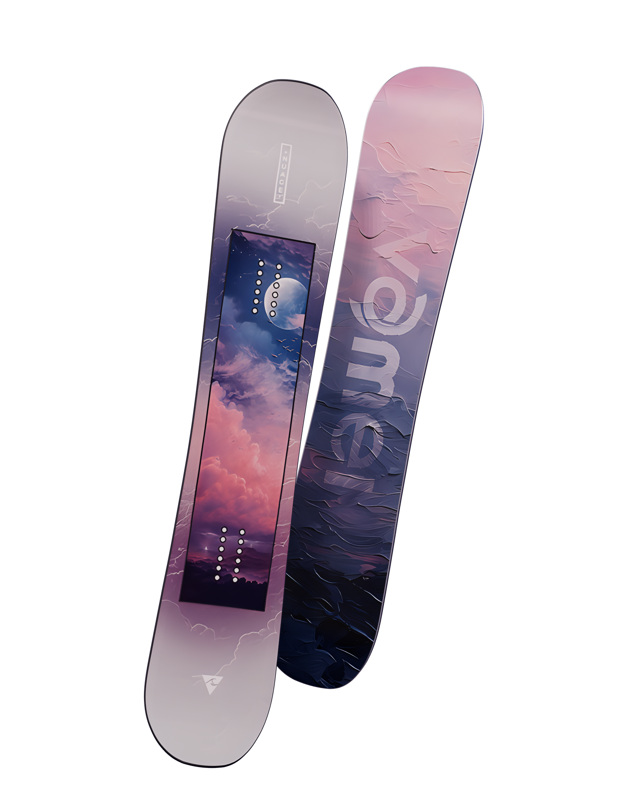
01关于 NUAGE
VM88 是一块自由式全能单板。从第一次换刃，到第一次刻出干净的弧线，它都稳稳接住你。板面是一整片暮色里的云，颜值与性能兼得。
la lumière
du soir
傍晚的光，落在板底的 vamei 字标上。
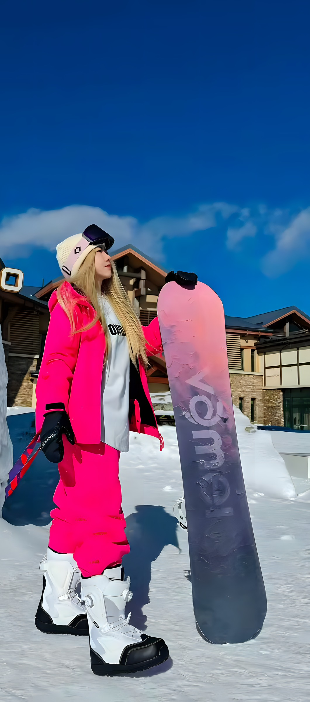
02产品信息
男女通用·新手入门 → 中阶全能
高含碳烧结板底
双向对称 Camber 正拱
Nuage
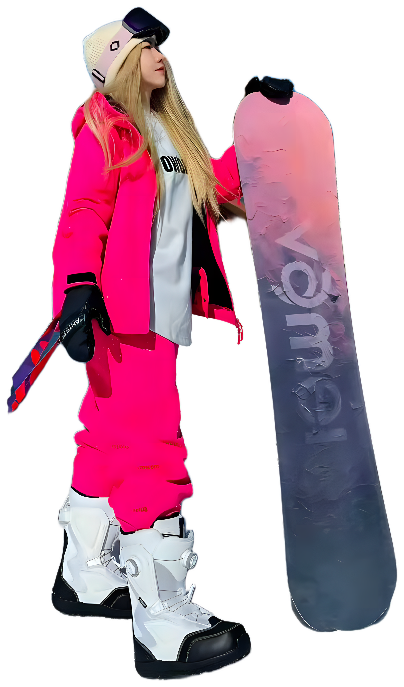
NUAGE 在法语里是「云」。
我们把一整片傍晚的天，
印在了你脚下。
03板芯结构
从板面到板底，每一层都在为同一件事工作：轻一点、弹一点、耐造一点。
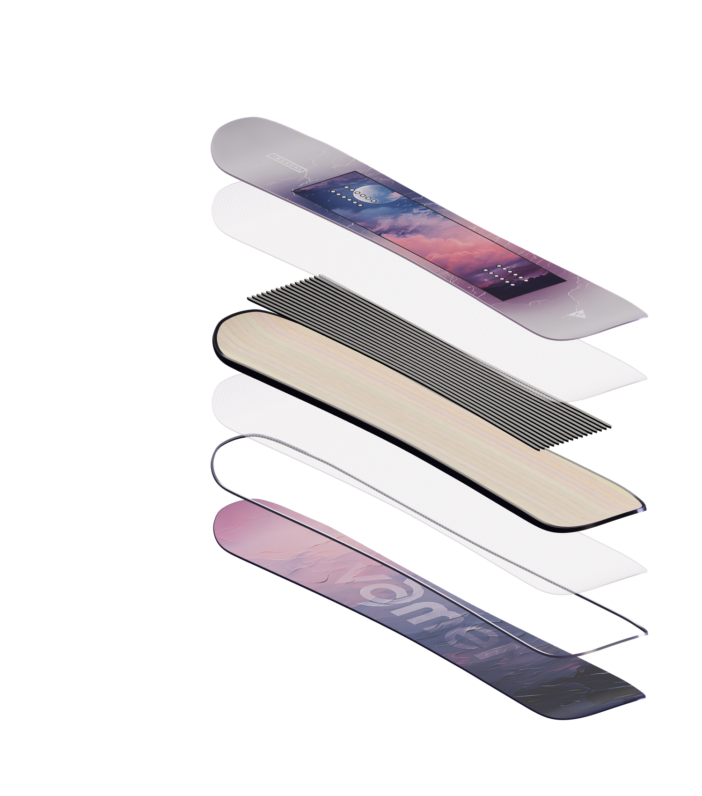
04核心科技
TECH 01
进口复合白杨木芯
在板芯局部采用高强度、轻量化的木材组合，减轻整体重量，却不损失核心支撑力。Ollie 和转向更省力，全天滑行不累脚。
TECH 02
双层 3 轴玻纤 + 16 根碳纤条
3 轴玻纤提升扭转韧性，16 根碳纤条纵向嵌入，从板头到板尾硬度递增：轻压柔和，重压有爆发，适应不同的发力习惯。
TECH 03
双向对称 Camber
经典正拱板型，提供扎实的切雪抓地力和稳定的弹射感。机压雪道、公园道具还是野雪小包，都有清晰的路感反馈，一板滑全山。
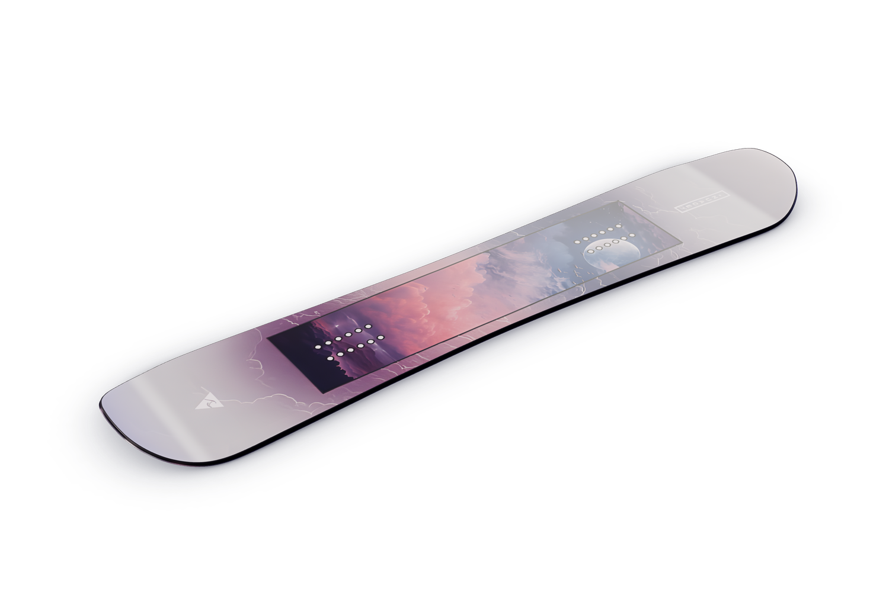
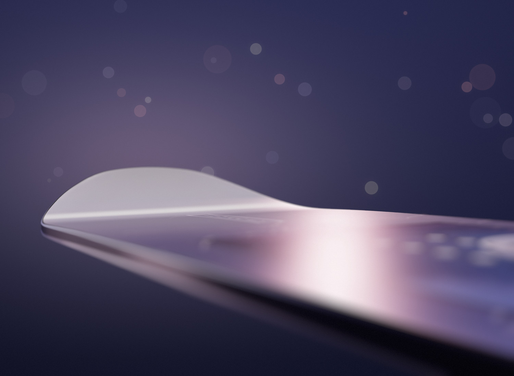
TECH 04
金属磨砂面 + 奥地利钢刃 + 烧结板底
表层缓冲碎石与道具的刮擦，板面不易留痕。
坚韧抗冲击，硬雪冰面也抓得住。
吸蜡性好，耐磨系数远超普通板底。
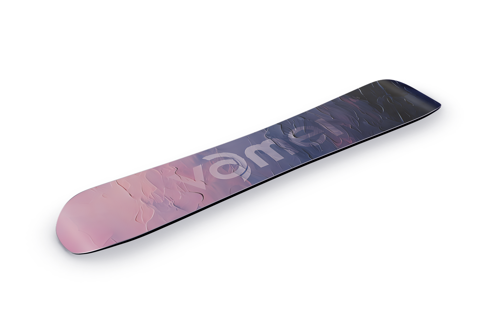
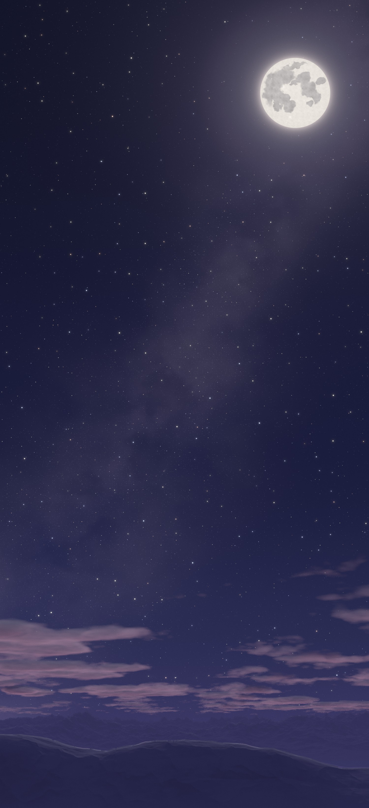
05板面细节
le ciel, des deux côtés
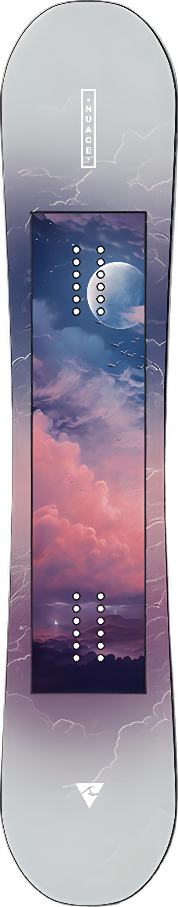
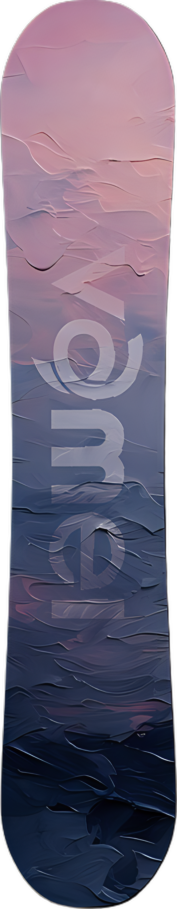
06产品参数
07尺码数据
| 雪板长度cm | 有效边刃mm | 侧切半径mm | 板腰宽度mm | 板头板尾mm | 雪板站距mm |
|---|---|---|---|---|---|
| 134 | 960.7 | 5543 | 217.8 | 259.7 | 360–560 |
| 138 | 989.0 | 5709 | 224.3 | 267.4 | 360–560 |
| 140 | 1048.0 | 7234 | 238.0 | 277.0 | 390–590 |
| 142 | 1056.0 | 6676 | 238.0 | 278.7 | 390–590 |
| 145 | 1080.0 | 6756 | 240.0 | 281.8 | 420–620 |
| 148 | 1098.0 | 7325 | 244.0 | 284.7 | 430–630 |
| 151 | 1120.0 | 7800 | 246.0 | 287.1 | 450–650 |
| 153 | 1094.0 | 6313 | 248.0 | 295.7 | 460–660 |
| 155 | 1089.0 | 6748 | 249.0 | 291.9 | 466–666 |
| 157 | 1098.0 | 6930 | 250.0 | 279.9 | 470–670 |
| 155W | 1129.0 | 8000 | 260.0 | 305.0 | 470–670 |
| 157W | 1102.0 | 8050 | 261.0 | 307.0 | 470–670 |
| 159 | 1142.0 | 6762 | 249.5 | 298.7 | 484–684 |
| 159W | 1166.0 | 7800 | 261.0 | 307.0 | 484–684 |
| 162W | 1190.0 | 8000 | 262.0 | 310.0 | 490–690 |
| 165W | 1218.0 | 8200 | 263.0 | 312.0 | 500–700 |
| 168W | 1246.0 | 8400 | 264.0 | 314.0 | 500–700 |
W 为宽板，适合脚码较大的滑手。不同批次可能有细微差异，请以实物为准，选码可咨询客服。
08长度建议
把雪板立在身前，看它到哪里。相同身高，体重越大，越建议选相对长一些的板。
板头在下巴到锁骨之间。偏向全山滑行、刻滑和跳台，高速更稳。
板头在下巴以下到锁骨之间。偏向平花和公园道具，转得更灵活。
09到手即滑
出厂前已完成钢刃角度打磨，到手即滑，无需额外开刃。
板底发白、干涩、滑行粘雪减速时，记得补蜡，避免磨损板底。
10保养建议
烧结板底需定期补蜡
建议每滑 5~7 天补蜡一次，粗雪或湿雪环境适当缩短周期。板底发白、干涩，就是缺蜡的信号。
让钢刃保持锋利
滑完及时擦干板面和边刃，避免锈蚀。遇到细小卷刃或钝化，用金刚石磨石轻拉修整。
软布擦拭即可
用软布或海绵擦去雪尘和杂质。避免长时间暴晒或靠近热源，防止图案老化褪色。
一防锈，二防干
钢刃抹防锈油或薄蜡，板底封一层厚养护蜡，来年开季刮掉即可。存放于阴凉干燥处，避免重压。
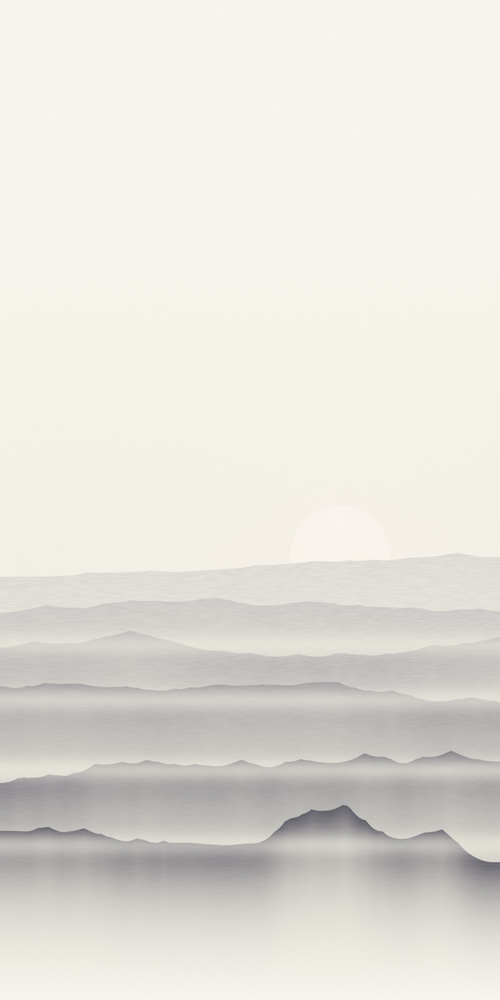
屲迈
屲迈（vamei）是一个专业单板滑雪品牌，致力于把美学和运动放在一起。我们想降低滑雪的门槛，同时把产品的性能和品质做好，让更多人感受到单板的魅力。
和中国雪友一起成长，一起享受运动与自然，超越与自由。
线下直营体验店
欢迎到店试板、调板。门店地址请咨询在线客服。
11购物须知
退换商品需保持全新未使用、不影响二次销售。已使用、包装丢失或破损、缠胶带或贴快递单的商品，无法办理退换。
付款后 48 小时内发货。质量问题退换运费由我们承担，非质量问题运费由买家承担。
正常使用下出现质量问题享 1 年质保，期内售后运费由我们承担。超期后仍可联系客服维修，仅收成本费和运费。
受拍摄光线和显示器影响，实物与图片可能存在细微色差，以实物为准。
特别提醒
原包装是产品的一部分，退换货时请一并完好寄回。试板请在室内软质地面进行，切勿上雪，以免影响退换。